IMI
IMI é um laboratório de design de modelos desorganizacionais. Em outras palavras, elas jogam fora, mexem e repensam estrutras dentro de empresas para cultivar uma cultura unica baseada nas pessoas que trabalham ali.
O conceito para desenvolver a identidade relaciona os meios de culturas criados dentro de laboratório para estudar microorganismos com os experimentos que a IMI conduz dentro dessas companias para desenvolver cultura para e com as pessoas. Nós desenvolvemos um código no Nodebox3 para criar meios de cultura digitais e usar esses gráficos como parte da identidade. As cores são inspiradas pela naturaze - folhas, bambus e o mundo fungi - e também pelas imperfeições da cerâmica oriental.
Feito no REBU
Cliente: IMI
Ano: 2020
Direção Criativa: Pedro Mattos, Fernando Andreazi
Design Gráfico: Bruno Faiotto, Camilla Mattos
Código: Bruno Faiotto
Fontes: Supply Mono, Neue Haas Grotesk
 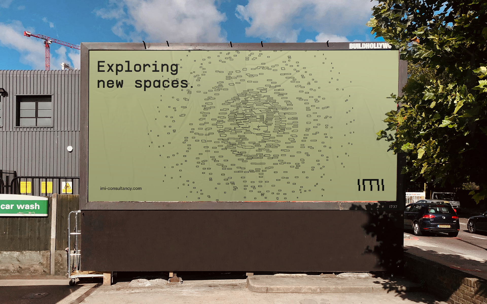
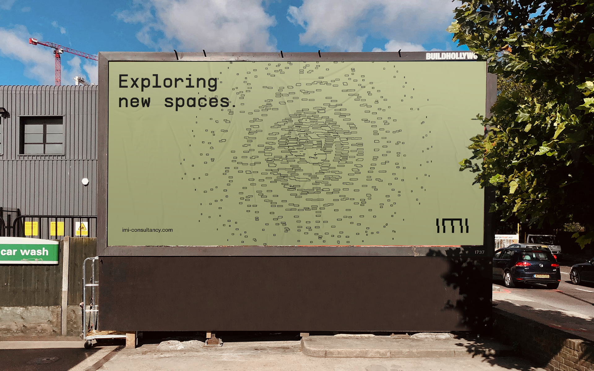
 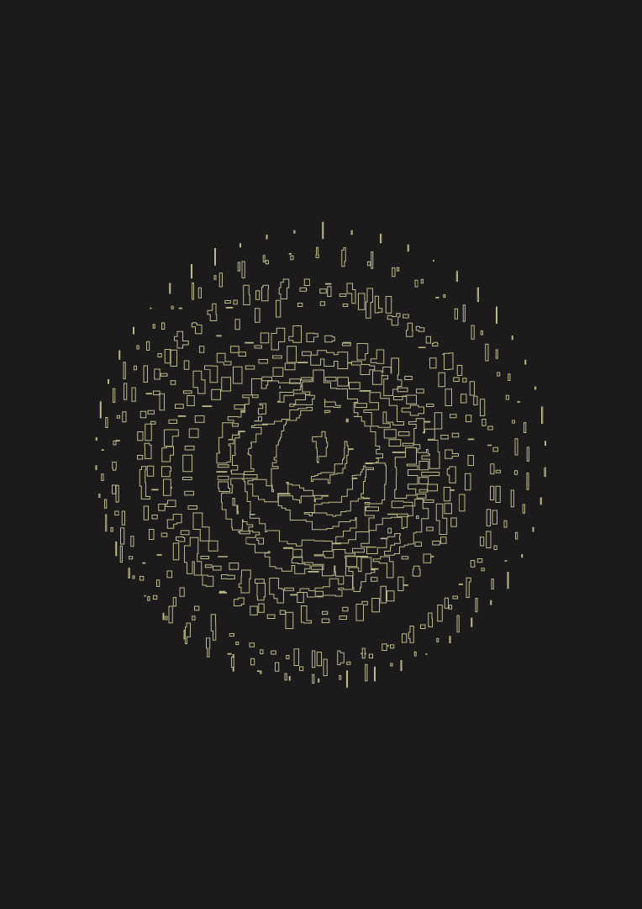
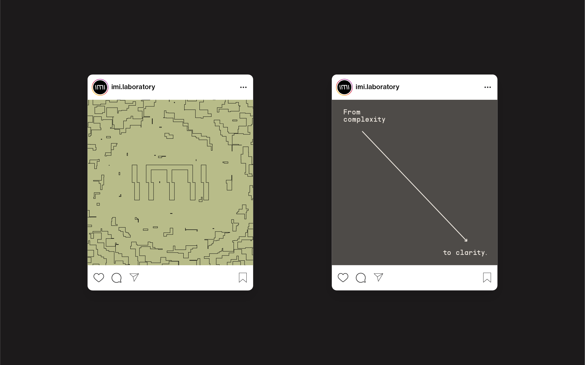
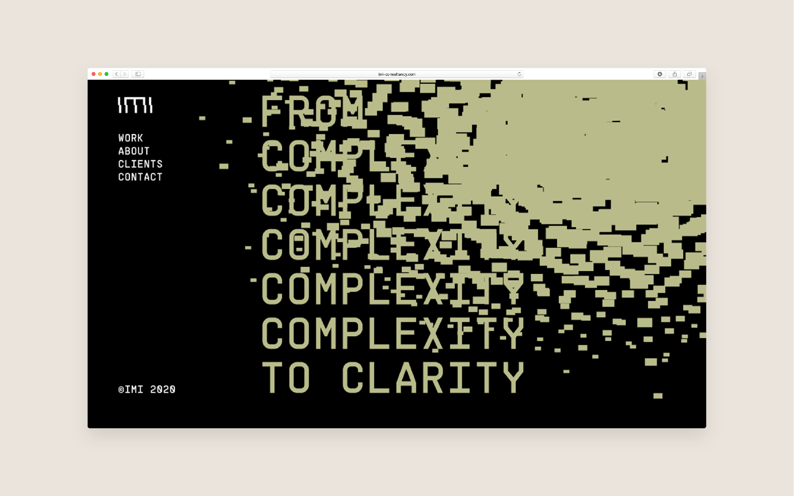
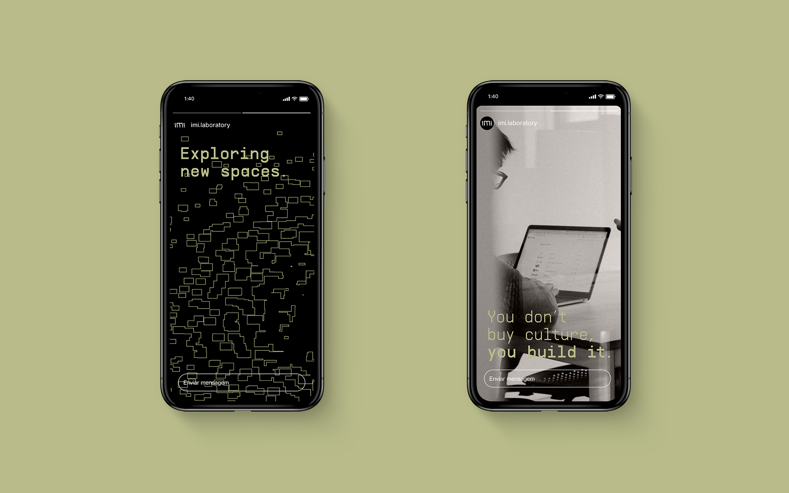
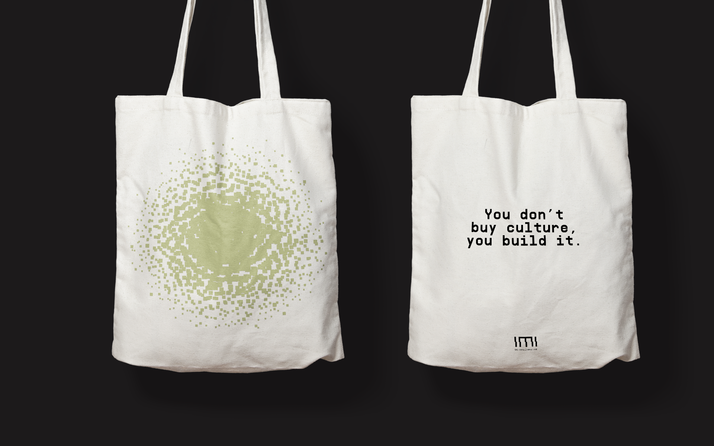
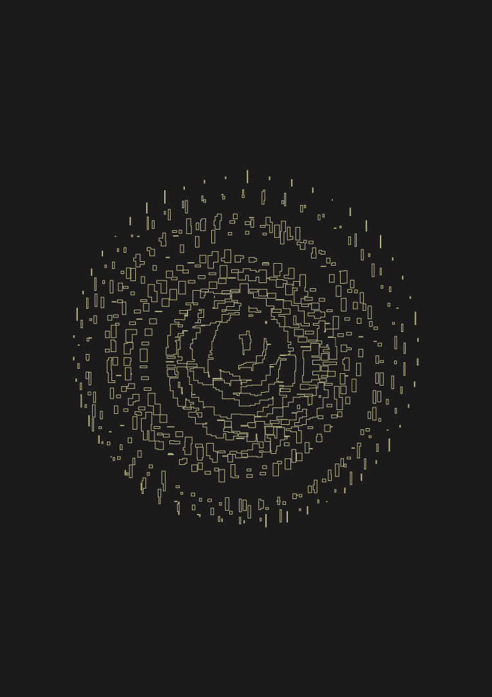
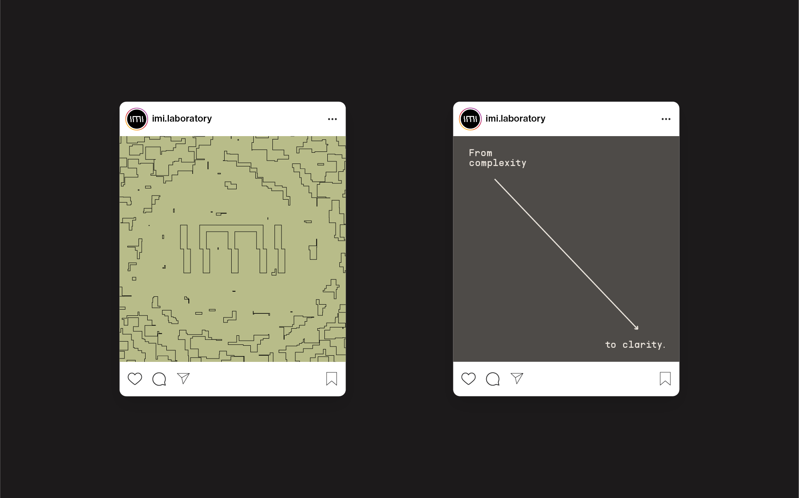
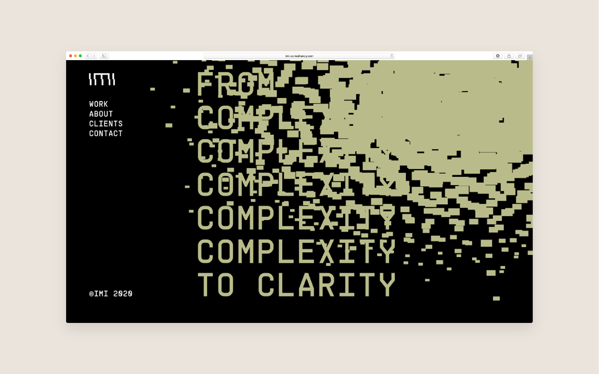
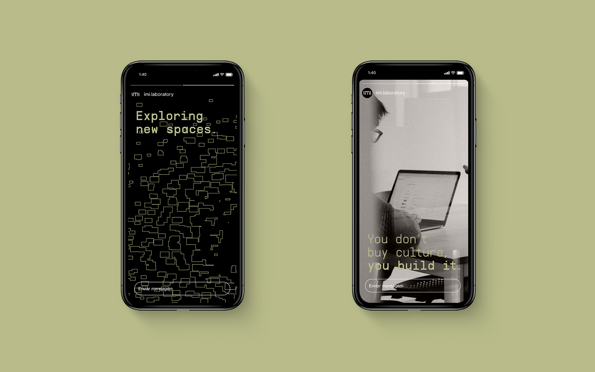
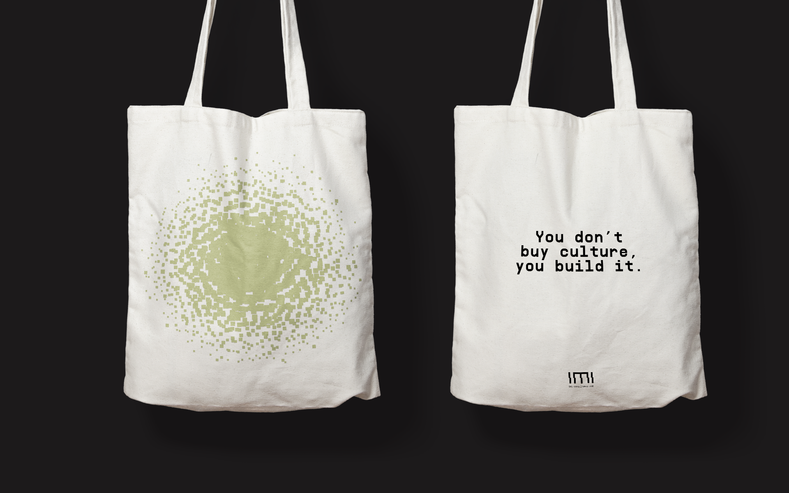